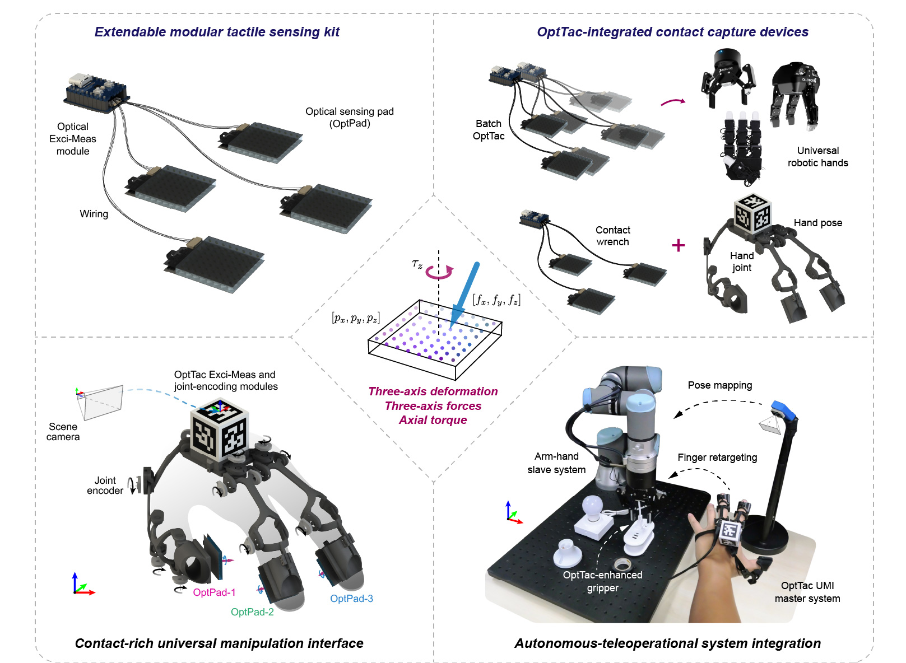
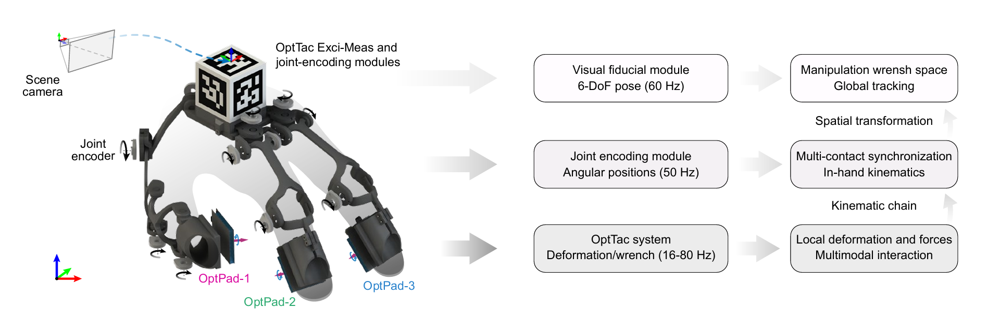
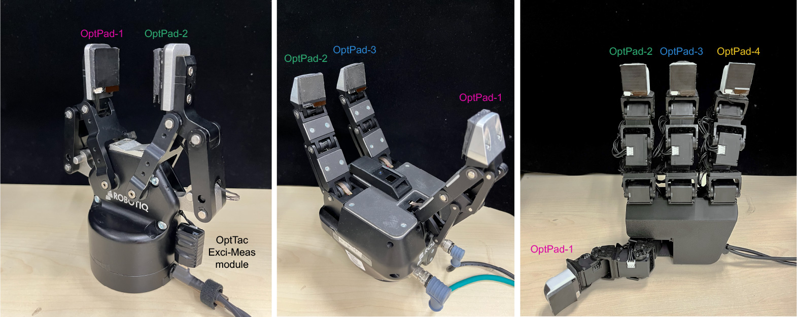
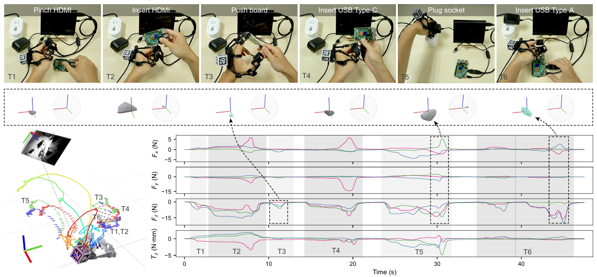
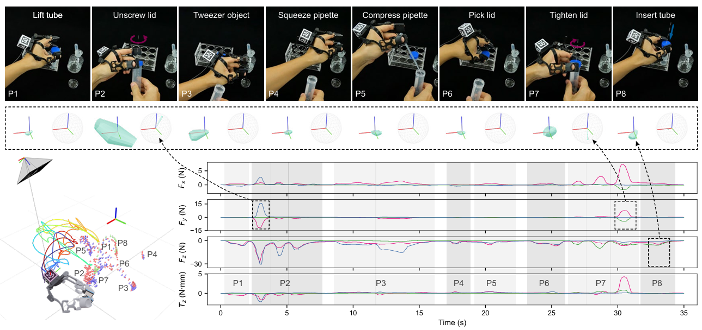
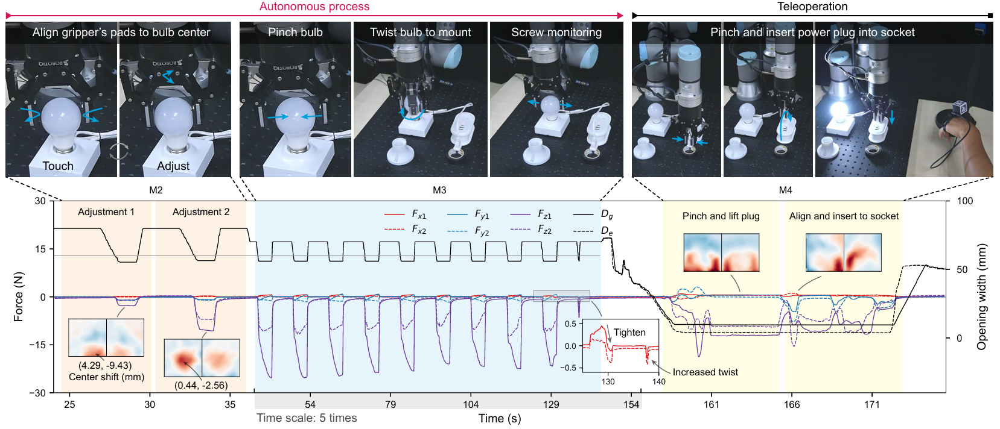

1University of Macau †Corresponding author

OptTac: a compact, reproducible, integration-friendly optoelectronic tactile sensing system for measuring distributed three-dimensional deformation, triaxial forces, and axial torque.
we introduce OptTac, a compact optoelectronic tactile sensor kit that reconstructs spatially distributed three-dimensional deformation from optical measurements of paired light-emitting diodes and photodiodes. We recover surface deformation via numerical optimization of measured light-intensity distributions, then deploy a lightweight neural network to estimate triaxial contact forces and axial torque. Leveraging a purpose-built taxel array and controlled light-excitation protocols, our 3-mm-thick flexible sensor can be fabricated with readily accessible workflows and integrated onto articulated robotic hands.
The 24 × 24 mm sensing pad achieves full-scale mean absolute errors of 1.2%, 1.7%, and 2.4% for normal force, shear force, and axial torque, respectively. We validate OptTac for multimodal manipulation-skill data collection and wrench-guided autonomous teleoperation using a custom sensorized exoskeleton interface. We fully open-source fabrication protocols and software to accelerate the development of contact-aware robotic manipulation.

UMI: Three primary hand fingers are equipped with OptPads controlled by the Exci-Meas module which is integrated into the marker cube of the visual fiducial system. The thumb is articulated by four-degree-of-freedom angular encoders, while each of two affiliated fingers is kinetically encoded by three joints.

Robotiq-2F/3F: Owing to the flexible, compact design of OptPads, our tactile sensing kit can immediately endow common robotic manipulators with modality-rich sensation without modifying existing mechanisms. The small sensor thickness also considerably retains the available opening range for robotic manipulation.
LEAP Hand: Seamless integration of four OptTacs onto the intricate 16-degree-of-freedom LEAP Hand. Additional OptPads can be feasibly installed on the finger pads and the palm of the hand, if required.

The OptTac UMI is validated in a sequential assembly task, including plugging various portable physical interfaces.

Further dexterous experimental operations containing screwing, squeezing, and insertion further demonstrate that the UMI robustly captured continuous contact paths and six-axis wrench exertion on targeted objects, highlighting the sensing versatility of the OptTac UMI in dexterous manipulation tasks.

Flexible integration of OptTac into the master UMI and slave manipulator enables force-feedback autonomous teleoperation. Two OptTac kits seamlessly functioned and simultaneously monitored the manipulation hardware in both master and slave sides.
@misc{wang2026opttac,
title={OptTac: Reproducible Optoelectronic Tactile Sensing of Distributed Triaxial Deformation, Force, and Torque for Robotic Manipulation},
author={Wang, Xianli and Wu, Zehao and Xu, Qingsong},
note={Manuscript},
year={2026}
}
If you have any questions, please feel free to contact us: